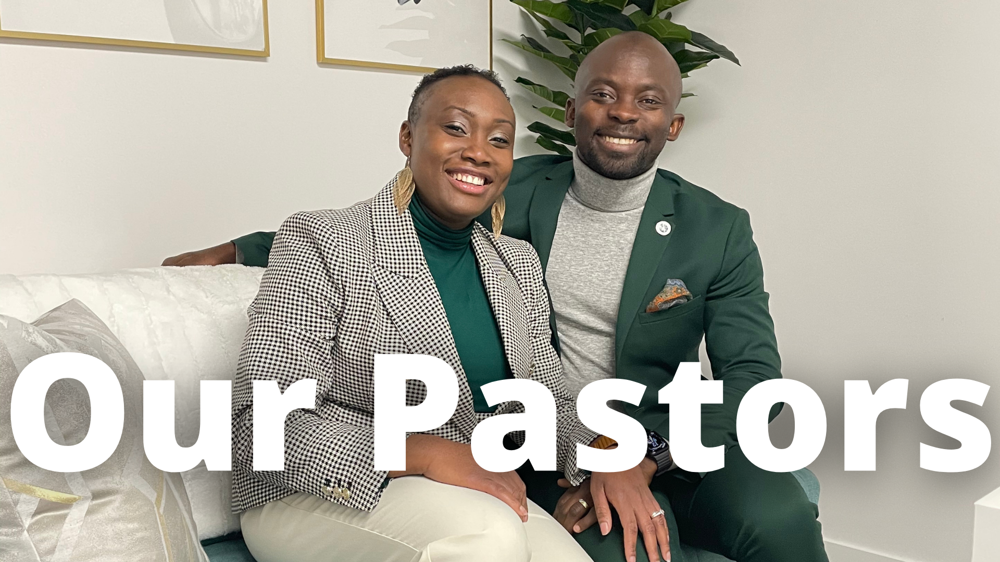

<ion-header translucent="true">
  <ion-toolbar>
      <ion-buttons slot="start">
      <ion-menu-button></ion-menu-button>
      </ion-buttons>
  </ion-toolbar>
</ion-header>

<ion-content fullscreen>
  
  <h3 class="top">Discover CCCG</h3>
  <p style="padding-left: 20px;">Home of Restoration and Transformation</p>

  
  <ion-card (click)="openWebPage('https://www.cccghq.org/our-story')">
    
  </ion-card>

  <br />
  <br />
  
  
  <ion-card (click)="openWebPage('https://www.cccghq.org/our-pastors')">
    
  </ion-card>
  
    
  <br />
  <br />

  <ion-card (click)="openWebPage('https://www.cccghq.org/newguest')">
    
  </ion-card>

  <br />
  <br />

  <ion-card (click)="openWebPage('https://www.cccghq.org/newlife')">
    
  </ion-card>

  <br />
  <br />

  <ion-card (click)="openWebPage('https://www.cccghq.org/getinvolved')">
    
  </ion-card>

  <br />
  <br />
</ion-content>
